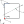

Advanced Computerized Tomography with Pyxu#
The introductory tutorial on tomography showed how to simulate a tomographic setup using Pyxu, where we piggy-backed on the radon()üîó and iradon()üîó functions from scikit-image to define the apply and adjoint methods of the Radon operator.
While we could obtain good reconstructions with this Radon implementation, scikit’s operator is limited to 2D parallel beam projections: there is no support for alternative scanning geometries such as fan-beam. Moreover 3D transforms are unavailable.
This notebook is focused around Pyxu‚Äôs XRayTransform()üîó class, a flexible frontend to 2 high-performance Radon/XRay implementations for 2D/3D setups. The goal is to show how to create different scanning geometries and their effect on image quality if we do not perform regularization.
Let’s get started!
Preliminaries#
The X-Ray Transform (XRT) of a function \(f: \mathbb{R}^{D} \to \mathbb{R}\) is defined as
where \(\mathbf{n}\in \mathbb{S}^{D-1}\) and \(\mathbf{t} \in \mathbf{n}^{\perp}\). \(\mathcal{P}[f]\) hence denotes the set of line integrals of \(f\).
Two class of algorithms exist to evaluate the XRT:
Fourier methods leverage the Fourier Slice Theorem (FST) to efficiently evaluate the XRT when multiple values of \(\mathbf{t}\) are desired for each \(\mathbf{n}\).
Ray methods compute estimates of the XRT via quadrature rules by assuming \(f\) is piecewise constant on short intervals.
Pyxu‚Äôs XRayTransform()üîó efficiently evaluates samples of the XRT assuming \(f\) is a pixelized image/volume where:
the lower-left element of \(f\) is located at \(\mathbf{o} \in \mathbb{R}^{D}\),
pixel dimensions are \(\mathbf{\Delta} \in \mathbb{R}_{+}^{D}\), i.e.
In the 2D case, the parametrization is best explained by the figure below:

2D Imaging#
Let’s try to reconstruct a phantom using different scanning geometries, each having the same number of total rays cast into the medium:
2D parallel beam with equi-spaced offsets.
2D parallel beam with non-uniform offsets.
2D fan beam.
We will use the phantom below for all experiments.
[2]:
def create_2D_phantom(shape: tuple[int], seed: int) -> np.ndarray:
# in: (N_h, N_w) phantom dimensions [px]
# out: (N_h, N_w) phantom
import xdesign as xd
np.random.seed(seed)
substrate = xd.Foam(size_range=[0.1, 0.01], gap=0.025, porosity=0.5)
I = xd.discrete_phantom(substrate, np.mean(shape, dtype=int)) # produce image at average resolution
I = np.pad(I, int(0.05 * I.shape[0])) # 5% axial pad
I = ski.transform.rescale(I, scale=np.array(shape) / I.shape[0]) # rescale to user dimensions
I = (I - I.min()) / I.ptp()
return I
N_side = 512 # N_px = N_side**2
pitch = 1e-4 # m/px [can differ per axis]
phantom = create_2D_phantom(shape=(N_side, N_side), seed=5)
im_kwargs = dict(
origin="lower",
extent=[0, N_side * pitch, 0, N_side * pitch],
)
fig, ax = plt.subplots()
ax.imshow(phantom, **im_kwargs)
ax.set_xlabel("x [m]")
ax.set_ylabel("y [m]")
ax.set_title("Phantom")
[2]:
Text(0.5, 1.0, 'Phantom')

Parallel Beam: Uniform Offsets#
Let‚Äôs first look at a baseline setup similar to what scikit-image‚Äôs radon()üîó and iradon()üîó functions would produce: a parallel-beam scan with equi-spaced lines and uniformly-distributed scan directions.
[3]:
N_angle = 100
N_offset = 200
# Let's build the necessary components to instantiate the operator. ========================
angle = np.linspace(0, np.pi, N_angle, endpoint=False)
n = np.stack([np.cos(angle), np.sin(angle)], axis=1)
t = n[:, [1, 0]] # <n, t> = 0
t_max = pitch * N_side / 2 * 1.1 # 10% over ball radius
t_offset = np.linspace(-t_max, t_max, N_offset, endpoint=True)
n_spec = np.broadcast_to(n.reshape(N_angle, 1, 2), (N_angle, N_offset, 2)) # (N_angle, N_offset, 2)
t_spec = t.reshape(N_angle, 1, 2) * t_offset.reshape(N_offset, 1) # (N_angle, N_offset, 2)
t_spec += pitch * N_side / 2 # Move anchor point to the center of volume.
# ==========================================================================================
op_para_u = pxr.XRayTransform.init(
arg_shape=(N_side, N_side),
origin=0, # bottom-left corner of volume located at (0, 0)
pitch=pitch, # pixel dimensions. (Can vary per axis.)
method="ray-trace",
n_spec=n_spec.reshape(-1, 2), # (N_ray, 2) directions
t_spec=t_spec.reshape(-1, 2), # (N_ray, 2)
)
Now that we created the XRay operator, let’s compute the sinogram and visualize it.
[4]:
# Compute sinogram
sinogram = op_para_u.apply(phantom.reshape(-1)).reshape(N_angle, N_offset) # (N_angle, N_offset)
# And plot it
N_level = 50
fig, ax = plt.subplots()
ANGLE, OFFSET = np.meshgrid(angle, t_offset, indexing="ij")
contour = ax.contourf(
ANGLE,
OFFSET,
sinogram,
levels=np.linspace(0, sinogram.max(), N_level),
cmap='grey',
)
cbar = fig.colorbar(contour, ax=ax)
ax.set_xlabel(r"$\angle \mathbf{n}$")
ax.set_xticks(
ticks=[0, np.pi/2, np.pi],
labels=["0", r"$\frac{\pi}{2}$", r"$\pi$"],
)
ax.set_ylabel(r"lateral offset [m]")
ax.set_yticks(
ticks=[t_offset.min(), 0, t_offset.max()],
labels=None,
);

Now that we have the sinogram, let’s invert the imaging process to (try to) reconstruct an image which produced it. We will try 2 methods:
Plain back-projection of the sinogram data into the image domain.
Forming the least-squares image. This can be obtained via the Filtered-BackProjection algorithm (FBP), but let’s stick to an undampened CG method to compute the pseudo-inverse for simplicity.
[5]:
# Compute backprojected image and LSQ image. =======================
I_BP = op_para_u.adjoint(sinogram.reshape(-1)).reshape(phantom.shape)
I_LSQ = op_para_u.pinv(sinogram.reshape(-1), damp=0).reshape(phantom.shape)
# Plot the images ==================================================
fig, ax = plt.subplots(1, 3, figsize=[4, 6])
ax[0].imshow(phantom, **im_kwargs)
ax[1].imshow(np.log(I_BP), **im_kwargs)
ax[2].imshow(I_LSQ, **im_kwargs)
ax[0].set_title("Ground-Truth")
ax[1].set_title("log-BackProj")
ax[2].set_title("LS")
for _ax in ax:
_ax.axis("off")
# aliases to compare against fan-beam later on.
I_BP_u = I_BP
I_LSQ_u = I_LSQ
INFO:/tmp/pyxu_50nxhnos:[2023-10-25 16:16:24.719731] Iteration 0
iteration: 0
AbsError[residual]: 0.0568762221784964
N_iter: 1.0
INFO:/tmp/pyxu_50nxhnos:[2023-10-25 16:16:25.173524] Iteration 1
iteration: 1
AbsError[residual]: 0.06557013021245907
N_iter: 2.0
INFO:/tmp/pyxu_50nxhnos:[2023-10-25 16:16:25.550767] Iteration 2
iteration: 2
AbsError[residual]: 0.00599593202323822
N_iter: 3.0
INFO:/tmp/pyxu_50nxhnos:[2023-10-25 16:16:25.910576] Iteration 3
iteration: 3
AbsError[residual]: 0.0020035581956044774
N_iter: 4.0
INFO:/tmp/pyxu_50nxhnos:[2023-10-25 16:16:26.277650] Iteration 4
iteration: 4
AbsError[residual]: 0.008520015274191939
N_iter: 5.0
INFO:/tmp/pyxu_50nxhnos:[2023-10-25 16:16:26.644934] Iteration 5
iteration: 5
AbsError[residual]: 0.0009511971744065829
N_iter: 6.0
INFO:/tmp/pyxu_50nxhnos:[2023-10-25 16:16:27.035085] Iteration 6
iteration: 6
AbsError[residual]: 0.0005985448490385771
N_iter: 7.0
INFO:/tmp/pyxu_50nxhnos:[2023-10-25 16:16:27.401276] Iteration 7
iteration: 7
AbsError[residual]: 0.0005452610047946128
N_iter: 8.0
INFO:/tmp/pyxu_50nxhnos:[2023-10-25 16:16:27.809917] Iteration 8
iteration: 8
AbsError[residual]: 0.0015153082160769854
N_iter: 9.0
INFO:/tmp/pyxu_50nxhnos:[2023-10-25 16:16:28.183754] Iteration 9
iteration: 9
AbsError[residual]: 0.0003085447941630805
N_iter: 10.0
INFO:/tmp/pyxu_50nxhnos:[2023-10-25 16:16:28.571470] Iteration 10
iteration: 10
AbsError[residual]: 0.0002228763698616621
N_iter: 11.0
INFO:/tmp/pyxu_50nxhnos:[2023-10-25 16:16:28.925244] Iteration 11
iteration: 11
AbsError[residual]: 0.0002962809360471156
N_iter: 12.0
INFO:/tmp/pyxu_50nxhnos:[2023-10-25 16:16:29.294388] Iteration 12
iteration: 12
AbsError[residual]: 0.0005157374911570223
N_iter: 13.0
INFO:/tmp/pyxu_50nxhnos:[2023-10-25 16:16:29.661207] Iteration 13
iteration: 13
AbsError[residual]: 0.00015538188946271337
N_iter: 14.0
INFO:/tmp/pyxu_50nxhnos:[2023-10-25 16:16:30.047053] Iteration 14
iteration: 14
AbsError[residual]: 9.810392423657637e-05
N_iter: 15.0
INFO:/tmp/pyxu_50nxhnos:[2023-10-25 16:16:30.047664] Stopping Criterion satisfied -> END

Some high-level remarks just by looking at these images:
The backprojected image has very low contrast: we barely can make out the porous structures in the background, even in log-scale.
The least-squares image allows us to identify the porous structure more easily. However the peripheral region is significantly more “blurry” than the central region. This is because the ray density is higher in the central region than in the periphery.
Parallel Beam: Non-Uniform Offsets#
One option to homogenize radial resolution is to move away from uniformly sampling \(t \in [-t_{\mathrm{offset}}^{\max}, t_{\mathrm{offset}}^{\max}]\), and instead sample it more densely at the peripheral regions. Let’s define a radius \(r \in ]0, t_{\mathrm{offset}}^{\max}[\) such that the number of offsets inside/outside the boundary are equal. We’ll image the phantom at different \(r\) values and see how the radial resolution changes.
[6]:
# We only need to change `t_spec` to create our non-uniformly sampled XRT.
radial_threshold = np.r_[0.25, 0.5, 0.85]
op_para_nu = []
for rt in radial_threshold:
# Let's build the necessary components to instantiate the operator. ========================
t_max = pitch * N_side / np.sqrt(2) # we go until the diagonal max size now.
t_offset_inside = np.linspace(-t_max * rt, t_max * rt, N_offset//2, endpoint=False)
t_offset_outside = np.linspace(t_max * rt, t_max, N_offset//4, endpoint=True)
t_offset = np.r_[-t_offset_outside, t_offset_inside, t_offset_outside]
t_spec = t.reshape(N_angle, 1, 2) * t_offset.reshape(N_offset, 1) # (N_angle, N_offset, 2)
t_spec += pitch * N_side / 2 # Move anchor point to the center of volume.
# ==========================================================================================
op = pxr.XRayTransform.init(
arg_shape=(N_side, N_side),
origin=0, # bottom-left corner of volume located at (0, 0)
pitch=pitch, # pixel dimensions. (Can vary per axis.)
method="ray-trace",
n_spec=n_spec.reshape(-1, 2), # (N_ray, 2) directions
t_spec=t_spec.reshape(-1, 2), # (N_ray, 2)
)
op_para_nu.append((rt, op))
[7]:
N_op = len(op_para_nu)
fig, ax = plt.subplots(ncols=N_op + 2, figsize=[4, 6])
ax[0].set_title("Ground-Truth")
ax[0].imshow(phantom, **im_kwargs)
ax[0].axis("off")
ax[-1].set_title("uniform-offset")
ax[-1].imshow(I_LSQ, **im_kwargs)
ax[-1].axis("off")
for i, (r, op) in enumerate(op_para_nu):
# Compute LSQ image. ===============================================
sinogram = op.apply(phantom.reshape(-1)).reshape(N_angle, N_offset)
I_LSQ = op.pinv(sinogram.reshape(-1), damp=0).reshape(phantom.shape)
# Plot it ==========================================================
ax[i+1].imshow(I_LSQ, **im_kwargs)
ax[i+1].set_title(f"$r={r}$")
ax[i+1].axis("off")
fig.tight_layout()
INFO:/tmp/pyxu_1g69kncx:[2023-10-25 16:16:31.134408] Iteration 0
iteration: 0
AbsError[residual]: 0.05728057919313109
N_iter: 1.0
INFO:/tmp/pyxu_1g69kncx:[2023-10-25 16:16:31.535639] Iteration 1
iteration: 1
AbsError[residual]: 0.06475229897888211
N_iter: 2.0
INFO:/tmp/pyxu_1g69kncx:[2023-10-25 16:16:31.929486] Iteration 2
iteration: 2
AbsError[residual]: 0.0069064066032000744
N_iter: 3.0
INFO:/tmp/pyxu_1g69kncx:[2023-10-25 16:16:32.302857] Iteration 3
iteration: 3
AbsError[residual]: 0.0023125116657778427
N_iter: 4.0
INFO:/tmp/pyxu_1g69kncx:[2023-10-25 16:16:32.694142] Iteration 4
iteration: 4
AbsError[residual]: 0.006244983732979188
N_iter: 5.0
INFO:/tmp/pyxu_1g69kncx:[2023-10-25 16:16:33.096623] Iteration 5
iteration: 5
AbsError[residual]: 0.001221721547160276
N_iter: 6.0
INFO:/tmp/pyxu_1g69kncx:[2023-10-25 16:16:33.490811] Iteration 6
iteration: 6
AbsError[residual]: 0.0008618007427083471
N_iter: 7.0
INFO:/tmp/pyxu_1g69kncx:[2023-10-25 16:16:33.861880] Iteration 7
iteration: 7
AbsError[residual]: 0.00069779779682013
N_iter: 8.0
INFO:/tmp/pyxu_1g69kncx:[2023-10-25 16:16:34.228972] Iteration 8
iteration: 8
AbsError[residual]: 0.0006512579699174248
N_iter: 9.0
INFO:/tmp/pyxu_1g69kncx:[2023-10-25 16:16:34.599533] Iteration 9
iteration: 9
AbsError[residual]: 0.0004937525530021967
N_iter: 10.0
INFO:/tmp/pyxu_1g69kncx:[2023-10-25 16:16:34.963708] Iteration 10
iteration: 10
AbsError[residual]: 0.0002218965431171188
N_iter: 11.0
INFO:/tmp/pyxu_1g69kncx:[2023-10-25 16:16:35.329028] Iteration 11
iteration: 11
AbsError[residual]: 0.00022180148559373163
N_iter: 12.0
INFO:/tmp/pyxu_1g69kncx:[2023-10-25 16:16:35.699571] Iteration 12
iteration: 12
AbsError[residual]: 0.0003632566159943089
N_iter: 13.0
INFO:/tmp/pyxu_1g69kncx:[2023-10-25 16:16:36.063792] Iteration 13
iteration: 13
AbsError[residual]: 0.0002543985077318786
N_iter: 14.0
INFO:/tmp/pyxu_1g69kncx:[2023-10-25 16:16:36.416310] Iteration 14
iteration: 14
AbsError[residual]: 0.0001068658951233657
N_iter: 15.0
INFO:/tmp/pyxu_1g69kncx:[2023-10-25 16:16:36.817029] Iteration 15
iteration: 15
AbsError[residual]: 7.733485003608704e-05
N_iter: 16.0
INFO:/tmp/pyxu_1g69kncx:[2023-10-25 16:16:36.817541] Stopping Criterion satisfied -> END
INFO:/tmp/pyxu_2ufdrf_p:[2023-10-25 16:16:37.340977] Iteration 0
iteration: 0
AbsError[residual]: 0.05055404033504593
N_iter: 1.0
INFO:/tmp/pyxu_2ufdrf_p:[2023-10-25 16:16:37.704061] Iteration 1
iteration: 1
AbsError[residual]: 0.060335270790205627
N_iter: 2.0
INFO:/tmp/pyxu_2ufdrf_p:[2023-10-25 16:16:38.055689] Iteration 2
iteration: 2
AbsError[residual]: 0.005110190315083068
N_iter: 3.0
INFO:/tmp/pyxu_2ufdrf_p:[2023-10-25 16:16:38.416006] Iteration 3
iteration: 3
AbsError[residual]: 0.0019088745042731415
N_iter: 4.0
INFO:/tmp/pyxu_2ufdrf_p:[2023-10-25 16:16:38.770654] Iteration 4
iteration: 4
AbsError[residual]: 0.008821448120204639
N_iter: 5.0
INFO:/tmp/pyxu_2ufdrf_p:[2023-10-25 16:16:39.137469] Iteration 5
iteration: 5
AbsError[residual]: 0.0008814012249415186
N_iter: 6.0
INFO:/tmp/pyxu_2ufdrf_p:[2023-10-25 16:16:39.502187] Iteration 6
iteration: 6
AbsError[residual]: 0.0005440477597315165
N_iter: 7.0
INFO:/tmp/pyxu_2ufdrf_p:[2023-10-25 16:16:39.893476] Iteration 7
iteration: 7
AbsError[residual]: 0.000454633547697322
N_iter: 8.0
INFO:/tmp/pyxu_2ufdrf_p:[2023-10-25 16:16:40.246875] Iteration 8
iteration: 8
AbsError[residual]: 0.0008643346408172268
N_iter: 9.0
INFO:/tmp/pyxu_2ufdrf_p:[2023-10-25 16:16:40.609934] Iteration 9
iteration: 9
AbsError[residual]: 0.0003043423930593373
N_iter: 10.0
INFO:/tmp/pyxu_2ufdrf_p:[2023-10-25 16:16:40.952939] Iteration 10
iteration: 10
AbsError[residual]: 0.00020901076838019297
N_iter: 11.0
INFO:/tmp/pyxu_2ufdrf_p:[2023-10-25 16:16:41.302381] Iteration 11
iteration: 11
AbsError[residual]: 0.0002520278501687159
N_iter: 12.0
INFO:/tmp/pyxu_2ufdrf_p:[2023-10-25 16:16:41.659087] Iteration 12
iteration: 12
AbsError[residual]: 0.00047022357080805916
N_iter: 13.0
INFO:/tmp/pyxu_2ufdrf_p:[2023-10-25 16:16:42.025045] Iteration 13
iteration: 13
AbsError[residual]: 0.00013472618153518562
N_iter: 14.0
INFO:/tmp/pyxu_2ufdrf_p:[2023-10-25 16:16:42.385869] Iteration 14
iteration: 14
AbsError[residual]: 8.401869244068868e-05
N_iter: 15.0
INFO:/tmp/pyxu_2ufdrf_p:[2023-10-25 16:16:42.386422] Stopping Criterion satisfied -> END
INFO:/tmp/pyxu_b_570pjp:[2023-10-25 16:16:42.889807] Iteration 0
iteration: 0
AbsError[residual]: 0.04144028087947521
N_iter: 1.0
INFO:/tmp/pyxu_b_570pjp:[2023-10-25 16:16:43.191581] Iteration 1
iteration: 1
AbsError[residual]: 0.04884479177525473
N_iter: 2.0
INFO:/tmp/pyxu_b_570pjp:[2023-10-25 16:16:43.569224] Iteration 2
iteration: 2
AbsError[residual]: 0.004874993958431622
N_iter: 3.0
INFO:/tmp/pyxu_b_570pjp:[2023-10-25 16:16:43.914414] Iteration 3
iteration: 3
AbsError[residual]: 0.0022598123696692084
N_iter: 4.0
INFO:/tmp/pyxu_b_570pjp:[2023-10-25 16:16:44.244886] Iteration 4
iteration: 4
AbsError[residual]: 0.005354189080136105
N_iter: 5.0
INFO:/tmp/pyxu_b_570pjp:[2023-10-25 16:16:44.725773] Iteration 5
iteration: 5
AbsError[residual]: 0.0013435662663850944
N_iter: 6.0
INFO:/tmp/pyxu_b_570pjp:[2023-10-25 16:16:45.082818] Iteration 6
iteration: 6
AbsError[residual]: 0.0006924431803871291
N_iter: 7.0
INFO:/tmp/pyxu_b_570pjp:[2023-10-25 16:16:45.432649] Iteration 7
iteration: 7
AbsError[residual]: 0.0005355016338636194
N_iter: 8.0
INFO:/tmp/pyxu_b_570pjp:[2023-10-25 16:16:45.749553] Iteration 8
iteration: 8
AbsError[residual]: 0.0007817799341352981
N_iter: 9.0
INFO:/tmp/pyxu_b_570pjp:[2023-10-25 16:16:46.066084] Iteration 9
iteration: 9
AbsError[residual]: 0.00035055113083838434
N_iter: 10.0
INFO:/tmp/pyxu_b_570pjp:[2023-10-25 16:16:46.409130] Iteration 10
iteration: 10
AbsError[residual]: 0.00018697351679171253
N_iter: 11.0
INFO:/tmp/pyxu_b_570pjp:[2023-10-25 16:16:46.757099] Iteration 11
iteration: 11
AbsError[residual]: 0.00014311793708716912
N_iter: 12.0
INFO:/tmp/pyxu_b_570pjp:[2023-10-25 16:16:47.066925] Iteration 12
iteration: 12
AbsError[residual]: 0.00032142952178576247
N_iter: 13.0
INFO:/tmp/pyxu_b_570pjp:[2023-10-25 16:16:47.359564] Iteration 13
iteration: 13
AbsError[residual]: 0.00014581281142271642
N_iter: 14.0
INFO:/tmp/pyxu_b_570pjp:[2023-10-25 16:16:47.675141] Iteration 14
iteration: 14
AbsError[residual]: 0.00010090305829689804
N_iter: 15.0
INFO:/tmp/pyxu_b_570pjp:[2023-10-25 16:16:47.975194] Iteration 15
iteration: 15
AbsError[residual]: 0.00011117647596298096
N_iter: 16.0
INFO:/tmp/pyxu_b_570pjp:[2023-10-25 16:16:48.294106] Iteration 16
iteration: 16
AbsError[residual]: 0.0002960482217990509
N_iter: 17.0
INFO:/tmp/pyxu_b_570pjp:[2023-10-25 16:16:48.612980] Iteration 17
iteration: 17
AbsError[residual]: 8.876078379409524e-05
N_iter: 18.0
INFO:/tmp/pyxu_b_570pjp:[2023-10-25 16:16:48.613590] Stopping Criterion satisfied -> END

A few takebacks from this experiment:
If \(r\) is small, then the sharp region is limited to a small radius around the image center.
As \(r\) increases, we lose sharpness at the center in favor of peripheral regions.
Fan Beam#
Another potential solution to improve radial resolution is to employ a fan beam geometry. The advantage of fan beam is potentially more “orientations” being available for the same value of \(N_{\mathrm{angle}}\).
We will take the same \(N_{\mathrm{angle}}\) and \(N_{\mathrm{offset}}\) settings as in parallel beam, but where \(N_{\mathrm{angle}}\) refers to the number of “emitter” locations, and \(N_{\mathrm{offset}}\) now corresponds to the number of detectors spread along the edge of the image.
[8]:
# In the parallel-beam setups above, we had fixed `origin=0` and shifted `t_spec` to be centered at the volume
# mid-point, i.e. (N_side * pitch / 2). For fan-beam, it is easier to center the volume at the origin of the reference
# system, i.e. `origin = -(N_side * pitch / 2)`, and define `n/t_spec` for one source position. Subsequent src/detector
# positions are then obtained by applying a rotation matrix.
# Let's build the necessary components to instantiate the operator. ========================
radius = (N_side * pitch / np.sqrt(2)) # be at diagonal distance
tx = np.r_[-1, 0] * radius # (2,)
t_max = N_side * pitch / np.sqrt(2)
t_offset = np.linspace(-t_max, t_max, N_offset, endpoint=True)
rx = np.stack([radius * np.ones(N_offset), t_offset], axis=-1) # (N_offset, 2)
t = np.broadcast_to(tx, (N_offset, 2))
n = rx - tx # vectors pointing from unique TX to all RX.
angle = np.linspace(0, 2 * np.pi, N_angle, endpoint=False)
R = np.zeros((N_angle, 2, 2))
R[:, 0, 0] = R[:, 1, 1] = np.cos(angle)
R[:, 1, 0] = np.sin(angle)
R[:, 0, 1] = -np.sin(angle)
n_spec = (R @ n.T).transpose(0, 2, 1) # (N_angle, N_offset, 2)
t_spec = (R @ t.T).transpose(0, 2, 1) # (N_angle, N_offset, 2)
# ==========================================================================================
op_fan = pxr.XRayTransform.init(
arg_shape=(N_side, N_side),
origin=-N_side * pitch / 2, # center of volume located at (0, 0)
pitch=pitch, # pixel dimensions. (Can vary per axis.)
method="ray-trace",
n_spec=n_spec.reshape(-1, 2), # (N_ray, 2) directions
t_spec=t_spec.reshape(-1, 2), # (N_ray, 2)
)
Plotting the sinogram is more complex than in the parallel-beam case, so let’s skip that step and instead see what the back-projected and least-squares images look like.
[9]:
# Compute backprojected image and LSQ image. =======================
sinogram = op_fan.apply(phantom.reshape(-1)).reshape(N_angle, N_offset)
I_BP = op_fan.adjoint(sinogram.reshape(-1)).reshape(phantom.shape)
I_LSQ = op_fan.pinv(sinogram.reshape(-1), damp=0).reshape(phantom.shape)
# Plot the images ==================================================
fig, ax = plt.subplots(1, 5, figsize=[4, 6])
ax[0].imshow(phantom, **im_kwargs)
ax[1].imshow(I_BP, **im_kwargs)
ax[2].imshow(I_LSQ, **im_kwargs)
ax[3].imshow(np.log(I_BP_u), **im_kwargs)
ax[4].imshow(I_LSQ_u, **im_kwargs)
ax[0].set_title("Ground-Truth")
ax[1].set_title("BP (Fan)")
ax[2].set_title("LSQ (Fan)")
ax[3].set_title("log-BP (Par)")
ax[4].set_title("LSQ (Par)")
for _ax in ax:
_ax.axis("off")
INFO:/tmp/pyxu_fvj2n87s:[2023-10-25 16:16:49.933514] Iteration 0
iteration: 0
AbsError[residual]: 0.05324659233113284
N_iter: 1.0
INFO:/tmp/pyxu_fvj2n87s:[2023-10-25 16:16:50.316351] Iteration 1
iteration: 1
AbsError[residual]: 0.0030503966703241477
N_iter: 2.0
INFO:/tmp/pyxu_fvj2n87s:[2023-10-25 16:16:50.685787] Iteration 2
iteration: 2
AbsError[residual]: 0.002050078046644744
N_iter: 3.0
INFO:/tmp/pyxu_fvj2n87s:[2023-10-25 16:16:51.062835] Iteration 3
iteration: 3
AbsError[residual]: 0.0008204376702557577
N_iter: 4.0
INFO:/tmp/pyxu_fvj2n87s:[2023-10-25 16:16:51.446991] Iteration 4
iteration: 4
AbsError[residual]: 0.00043823726059835833
N_iter: 5.0
INFO:/tmp/pyxu_fvj2n87s:[2023-10-25 16:16:51.847155] Iteration 5
iteration: 5
AbsError[residual]: 0.0002602644190319075
N_iter: 6.0
INFO:/tmp/pyxu_fvj2n87s:[2023-10-25 16:16:52.248460] Iteration 6
iteration: 6
AbsError[residual]: 0.00015193520335284082
N_iter: 7.0
INFO:/tmp/pyxu_fvj2n87s:[2023-10-25 16:16:52.618990] Iteration 7
iteration: 7
AbsError[residual]: 0.00010628436629923029
N_iter: 8.0
INFO:/tmp/pyxu_fvj2n87s:[2023-10-25 16:16:53.047513] Iteration 8
iteration: 8
AbsError[residual]: 6.848762332777297e-05
N_iter: 9.0
INFO:/tmp/pyxu_fvj2n87s:[2023-10-25 16:16:53.048141] Stopping Criterion satisfied -> END

Based on the plots, we can already see some interesting behaviour:
At equivalent rays cast into the medium, the back-projected fan-image has much higher contrast than the parallel-beam equivalent. (Linear vs. log-scale plot.)
The least-squares fan-beam image appears sharper & higher-contrast than the parallel beam version, but it warps at the borders due to the projection geometry.
A finer analysis is of course possible, but we hope to have shown how the scanning geometry impacts image reconstruction. The versatile XRayTransform()üîó class is therefore a handy tool in the computational scientist‚Äôs toolbox!